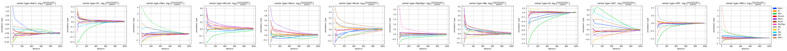
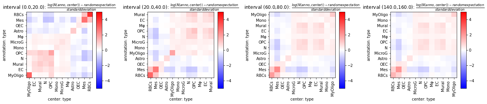

Slide-Seq Mouse Olfactory Bulb - multiple pucks¶
This example uses TACCO to annotate and analyse mouse olfactory bulb Slide-Seq data (Wang et al.) with mouse olfactory bulb scRNA-seq data (Tepe et al.) as reference.
(Wang et al.): Wang IH, Murray E, Andrews G, Jiang HC et al. Spatial transcriptomic reconstruction of the mouse olfactory glomerular map suggests principles of odor processing. Nat Neurosci 2022 Apr;25(4):484-492. PMID: 35314823
(Tepe et al.): Tepe B, Hill MC, Pekarek BT, Hunt PJ et al. Single-Cell RNA-Seq of Mouse Olfactory Bulb Reveals Cellular Heterogeneity and Activity-Dependent Molecular Census of Adult-Born Neurons. Cell Rep 2018 Dec 4;25(10):2689-2703.e3. PMID: 30517858
[1]:
import os
import warnings
warnings.filterwarnings('ignore','invalid value encountered in true_divide')
import pandas as pd
import numpy as np
import anndata as ad
import tacco as tc
Load data¶
[2]:
# The notebook expects to be executed either in the workflow directory or in the repository root folder
data_path = 'results/slideseq_mouse_olfactory_bulb'
if not os.path.exists(data_path):
data_path = f'../../{data_path}'
if not os.path.exists(data_path):
raise ValueError(f'The path to the data for the slideseq_mouse_olfactory_bulb cannot be found!')
[3]:
reference = ad.read(f'{data_path}/reference.h5ad')
[4]:
pucks = ad.concat({f.split('.')[0]: ad.read(f'{data_path}/{f}') for f in os.listdir(data_path) if f.startswith('puck_')},label='puck',index_unique='-')
[5]:
pucks.obs['replicate'] = pucks.obs['puck'].str.split('_').str[1].astype(int)
pucks.obs['slide'] = pucks.obs['puck'].str.split('_').str[2].astype(int)
unique_replicates = sorted(pucks.obs['replicate'].unique())
unique_slides = sorted(pucks.obs['slide'].unique())
pucks.obs['replicate'] = pucks.obs['replicate'].astype(pd.CategoricalDtype(unique_replicates,ordered=True))
pucks.obs['slide'] = pucks.obs['slide'].astype(pd.CategoricalDtype(unique_slides,ordered=True))
pucks.obs['puck'] = pucks.obs['puck'].astype(pd.CategoricalDtype([f'puck_{r}_{s}' for r in reversed(unique_replicates) for s in unique_slides],ordered=True))
Get a first impression of the spatial data¶
Plot total counts
[6]:
pucks.obs['total_counts'] = tc.sum(pucks.X,axis=1)
pucks.obs['log10_counts'] = np.log10(1+pucks.obs['total_counts'])
[7]:
fig,axs=tc.pl.subplots(len(unique_slides),len(unique_replicates), x_padding=1.5)
fig = tc.pl.scatter(pucks, 'log10_counts', group_key='puck', cmap='viridis', cmap_vmin_vmax=[1,3], ax=axs[::-1].reshape((1,40)));
fig.savefig(f'{data_path}/scatter_counts.pdf',bbox_inches='tight')

Plot marker genes
[8]:
cluster2type = reference.obs[['ClusterName','type']].drop_duplicates().groupby('type')['ClusterName'].agg(lambda x: list(x.to_numpy()))
type2long = reference.obs[['type','long']].drop_duplicates().groupby('long')['type'].agg(lambda x: list(x.to_numpy()))
[9]:
marker_map = {}
for k,v in type2long.items():
genes = []
if '(' in k:
genes = k.split('(')[-1].split(')')[0].split('/')
marker_map[v[0]] = [g[:-1] for g in genes]
[10]:
pucks.obsm['type_mrk'] = pd.DataFrame(0.0, index=pucks.obs.index, columns=sorted(reference.obs['type'].unique()))
for k,v in marker_map.items():
for g in v:
pucks.obsm['type_mrk'][k] += pucks[:,g].X.A.flatten()
total = pucks.obsm['type_mrk'][k].sum()
if total > 0:
pucks.obsm['type_mrk'][k] /= total
[11]:
fig,axs=tc.pl.subplots(len(unique_slides),len(unique_replicates))
tc.pl.scatter(pucks, 'type_mrk', group_key='puck', ax=axs[::-1].reshape((1,40)), compositional=True);
fig.savefig(f'{data_path}/scatter_marker.pdf',bbox_inches='tight')

Annotate the spatial data with compositions of cell types¶
Annotation is done on cluster level to capture variation within a cell type…
[12]:
tc.tl.annotate(pucks,reference,'ClusterName',result_key='ClusterName',)
Starting preprocessing
Annotation profiles were not found in `reference.varm["ClusterName"]`. Constructing reference profiles with `tacco.preprocessing.construct_reference_profiles` and default arguments...
Finished preprocessing in 85.29 seconds.
Starting annotation of data with shape (1421244, 15437) and a reference of shape (51426, 15437) using the following wrapped method:
+- platform normalization: platform_iterations=0, gene_keys=ClusterName, normalize_to=adata
+- multi center: multi_center=None multi_center_amplitudes=True
+- bisection boost: bisections=4, bisection_divisor=3
+- core: method=OT annotation_prior=None
mean,std( rescaling(gene) ) 23.102077197895326 276.93135100039547
/ahg/regevdata/projects/mouse_CRC/rerun/tacco_examples/.snakemake/conda/842233885b1b580a14864e15a669812f/lib/python3.10/site-packages/tacco/tools/_annotate.py:176: FutureWarning: X.dtype being converted to np.float32 from int16. In the next version of anndata (0.9) conversion will not be automatic. Pass dtype explicitly to avoid this warning. Pass `AnnData(X, dtype=X.dtype, ...)` to get the future behavour.
adata = ad.AnnData(adata.X.copy(), obs=adata.obs[[]], var=adata.var[[]])
bisection run on 1
bisection run on 0.6666666666666667
bisection run on 0.4444444444444444
bisection run on 0.2962962962962963
bisection run on 0.19753086419753085
bisection run on 0.09876543209876543
Finished annotation in 587.27 seconds.
[12]:
AnnData object with n_obs × n_vars = 1421244 × 17001
obs: 'x', 'y', 'puck', 'replicate', 'slide', 'total_counts', 'log10_counts'
obsm: 'type_mrk', 'ClusterName'
varm: 'ClusterName'
… and then aggregated to cell type level for visualization
[13]:
tc.utils.merge_annotation(pucks, 'ClusterName', cluster2type, 'type');
tc.utils.merge_annotation(pucks, 'type', type2long, 'long');
[14]:
fig,axs=tc.pl.subplots(len(unique_slides),len(unique_replicates))
tc.pl.scatter(pucks, 'type', group_key='puck', ax=axs[::-1].reshape((1,40)));
fig.savefig(f'{data_path}/scatter_type.pdf',bbox_inches='tight')

Analyse co-occurrence and neighbourhips¶
Calculate distance matrices per sample and evaluate different spatial metrics on that. Using sparse distance matrices is useful if one is interested only in small distances relative to the sample size.
[15]:
tc.tl.co_occurrence(pucks, 'type', sample_key='puck', result_key='type-type',delta_distance=20,max_distance=1000,sparse=False,n_permutation=10)
co_occurrence: The argument `distance_key` is `None`, meaning that the distance which is now calculated on the fly will not be saved. Providing a precalculated distance saves time in multiple calls to this function.
calculating distance for sample 1/40
calculating distance for sample 2/40
calculating distance for sample 3/40
calculating distance for sample 4/40
calculating distance for sample 5/40
calculating distance for sample 6/40
calculating distance for sample 7/40
calculating distance for sample 8/40
calculating distance for sample 9/40
calculating distance for sample 10/40
calculating distance for sample 11/40
calculating distance for sample 12/40
calculating distance for sample 13/40
calculating distance for sample 14/40
calculating distance for sample 15/40
calculating distance for sample 16/40
calculating distance for sample 17/40
calculating distance for sample 18/40
calculating distance for sample 19/40
calculating distance for sample 20/40
calculating distance for sample 21/40
calculating distance for sample 22/40
calculating distance for sample 23/40
calculating distance for sample 24/40
calculating distance for sample 25/40
calculating distance for sample 26/40
calculating distance for sample 27/40
calculating distance for sample 28/40
calculating distance for sample 29/40
calculating distance for sample 30/40
calculating distance for sample 31/40
calculating distance for sample 32/40
calculating distance for sample 33/40
calculating distance for sample 34/40
calculating distance for sample 35/40
calculating distance for sample 36/40
calculating distance for sample 37/40
calculating distance for sample 38/40
calculating distance for sample 39/40
calculating distance for sample 40/40
[15]:
AnnData object with n_obs × n_vars = 1421244 × 17001
obs: 'x', 'y', 'puck', 'replicate', 'slide', 'total_counts', 'log10_counts'
uns: 'type-type'
obsm: 'type_mrk', 'ClusterName', 'type', 'long'
varm: 'ClusterName'
[16]:
fig = tc.pl.co_occurrence(pucks, 'type-type', log_base=2, wspace=0.25);
fig.savefig(f'{data_path}/cooc_line.pdf',bbox_inches='tight')

[17]:
fig = tc.pl.co_occurrence_matrix(pucks, 'type-type', score_key='z', restrict_intervals=[0,1,3,7],cmap_vmin_vmax=[-5,5], value_cluster=True, group_cluster=True);
fig.savefig(f'{data_path}/cooc_matrix.pdf',bbox_inches='tight')

[ ]: